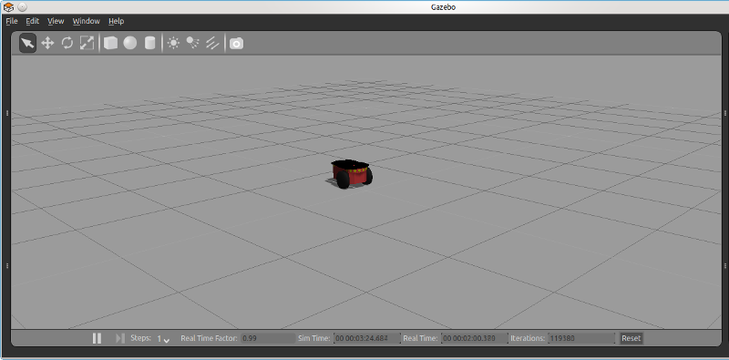

Gazebo is a simulation suite targeted at robotics projects, used by DARPA to implement the virtual part of its Robotics Challenge. It's a great companion to the Robot Operating System, supporting several ways to interface with it.
One recurrent question regarding Gazebo is how to control robots described in Simulation Description Format (SDF) models from ROS. The more involved case of porting a URDF model to Gazebo and manipulating it through ROS Control interfaces is well documented, but what about a robot that already has a full SDF model available? Isn't it possible to just paste it into a Gazebo workspace and get some ROS topics to manipulate it?
The tutorial below covers this simpler case. It is based on the SDF model for the Pioneer 2DX differential drive robot, which is available from Gazebo's default library. It also assumes ROS and Gazebo are already installed, as well as the necessary integration packages and plugins.
First, save the SDF world model below to your local filesystem as pioneer2dx_ros.world:
1
2
3
4
5
6
7
8
9
10
11
12
13
14
15
16
17
18
19
20
21
22
23
24
25
26
27
28
29
30
31
32
33
34
35
36
37
38
39
40
41
42
43
44
45
46
47
48
49
50
51
52
53
54
55
56
57
58
59
60
61
62
63
64
65
66
67
68
69
70
71
72
73
74
75
76
77
78
79
80
81
82
83
84
85
86
87
88
89
90
91
92
93
94
95
96
97
98
99
100
101
102
103
104
105
106
107
108
109
110
111
112
113
114
115
116
117
118
119
120
121
122
123
124
125
126
127
128
129
130
131
132
133
134
135
136
137
138
139
140
141
142
143
144
145
146
147
148
149
150
151
152
153
154
155
156
157
158
159
160
161
162
163
164
165
166
167
168
169
170
171
172
173
174
175
176
177
178
179
180
181
182
183
184
185
186
187
188
189
190
191
192
193
194
195
196
197
198
199
200
201
202
203
204
205
206
207
208
209
210
211
212
213
214
215
216
217
218
219
220
221
222
223
224
225
226
227
228
229
230
231
232
233
234
235
236
237
238
239
240
241
242
243
244
245
246
247
248
249
250
251
252
253
254
255
256
257
258
259
260
261
262
263
264
265
266
267
268
269
270
271
272
273
274
275
276
277
278
279
280
281
282
283
284
285
286
287
288
289
290
291
292
293
294
295
296
297
298
299
300
301
302
303
304
305
306
307
308
309
310
311
312
313
314
315
316
317
318
319
320
321
322
323
324
325
326
327
328
329
330
331
332
333
334
335
336
337
338
339
340
341
342
343
344
345
346
347
348
349
350
351
352
353
354
355
356
357
358
359
360
361
362
363
364
365
366
367
368
369
370
371
372
373 | <?xml version="1.0" ?>
<sdf version="1.4">
<world name="default">
<light name="sun" type="directional">
<cast_shadows>1</cast_shadows>
<pose>0 0 10 0 -0 0</pose>
<diffuse>0.8 0.8 0.8 1</diffuse>
<specular>0.2 0.2 0.2 1</specular>
<attenuation>
<range>1000</range>
<constant>0.9</constant>
<linear>0.01</linear>
<quadratic>0.001</quadratic>
</attenuation>
<direction>-0.5 0.1 -0.9</direction>
</light>
<model name="ground_plane">
<static>1</static>
<link name="link">
<collision name="collision">
<geometry>
<plane>
<normal>0 0 1</normal>
<size>100 100</size>
</plane>
</geometry>
<surface>
<friction>
<ode>
<mu>100</mu>
<mu2>50</mu2>
</ode>
</friction>
<bounce/>
<contact>
<ode/>
</contact>
</surface>
<max_contacts>10</max_contacts>
</collision>
<visual name="visual">
<cast_shadows>0</cast_shadows>
<geometry>
<plane>
<normal>0 0 1</normal>
<size>100 100</size>
</plane>
</geometry>
<material>
<script>
<uri>file://media/materials/scripts/gazebo.material</uri>
<name>Gazebo/Grey</name>
</script>
</material>
</visual>
<velocity_decay>
<linear>0</linear>
<angular>0</angular>
</velocity_decay>
<self_collide>0</self_collide>
<kinematic>0</kinematic>
<gravity>1</gravity>
</link>
</model>
<physics type="ode">
<max_step_size>0.001</max_step_size>
<real_time_factor>1</real_time_factor>
<real_time_update_rate>1000</real_time_update_rate>
<gravity>0 0 -9.8</gravity>
</physics>
<scene>
<ambient>0.4 0.4 0.4 1</ambient>
<background>0.7 0.7 0.7 1</background>
<shadows>1</shadows>
</scene>
<spherical_coordinates>
<surface_model>EARTH_WGS84</surface_model>
<latitude_deg>0</latitude_deg>
<longitude_deg>0</longitude_deg>
<elevation>0</elevation>
<heading_deg>0</heading_deg>
</spherical_coordinates>
<model name="pioneer2dx">
<link name="chassis">
<pose>0 0 0.16 0 -0 0</pose>
<inertial>
<mass>5.67</mass>
<inertia>
<ixx>0.07</ixx>
<iyy>0.08</iyy>
<izz>0.1</izz>
<ixy>0</ixy>
<ixz>0</ixz>
<iyz>0</iyz>
</inertia>
</inertial>
<collision name="collision">
<geometry>
<box>
<size>0.445 0.277 0.17</size>
</box>
</geometry>
<max_contacts>10</max_contacts>
<surface>
<bounce/>
<friction>
<ode/>
</friction>
<contact>
<ode/>
</contact>
</surface>
</collision>
<collision name="castor_collision">
<pose>-0.2 0 -0.12 0 -0 0</pose>
<geometry>
<sphere>
<radius>0.04</radius>
</sphere>
</geometry>
<surface>
<friction>
<ode>
<mu>0</mu>
<mu2>0</mu2>
<slip1>1</slip1>
<slip2>1</slip2>
</ode>
</friction>
<bounce/>
<contact>
<ode/>
</contact>
</surface>
<max_contacts>10</max_contacts>
</collision>
<visual name="visual">
<pose>0 0 0.04 0 -0 0</pose>
<geometry>
<mesh>
<uri>model://pioneer2dx/meshes/chassis.dae</uri>
</mesh>
</geometry>
</visual>
<visual name="castor_visual">
<pose>-0.2 0 -0.12 0 -0 0</pose>
<geometry>
<sphere>
<radius>0.04</radius>
</sphere>
</geometry>
<material>
<script>
<uri>file://media/materials/scripts/gazebo.material</uri>
<name>Gazebo/FlatBlack</name>
</script>
</material>
</visual>
<velocity_decay>
<linear>0</linear>
<angular>0</angular>
</velocity_decay>
<self_collide>0</self_collide>
<kinematic>0</kinematic>
<gravity>1</gravity>
</link>
<link name="right_wheel">
<pose>0.1 -0.17 0.11 0 1.5707 1.5707</pose>
<inertial>
<mass>1.5</mass>
<inertia>
<ixx>0.0051</ixx>
<iyy>0.0051</iyy>
<izz>0.009</izz>
<ixy>0</ixy>
<ixz>0</ixz>
<iyz>0</iyz>
</inertia>
</inertial>
<collision name="collision">
<geometry>
<cylinder>
<radius>0.11</radius>
<length>0.05</length>
</cylinder>
</geometry>
<surface>
<friction>
<ode>
<mu>100000</mu>
<mu2>100000</mu2>
<slip1>0</slip1>
<slip2>0</slip2>
</ode>
</friction>
<bounce/>
<contact>
<ode/>
</contact>
</surface>
<max_contacts>10</max_contacts>
</collision>
<visual name="visual">
<geometry>
<cylinder>
<radius>0.11</radius>
<length>0.05</length>
</cylinder>
</geometry>
<material>
<script>
<uri>file://media/materials/scripts/gazebo.material</uri>
<name>Gazebo/FlatBlack</name>
</script>
</material>
</visual>
<velocity_decay>
<linear>0</linear>
<angular>0</angular>
</velocity_decay>
<self_collide>0</self_collide>
<kinematic>0</kinematic>
<gravity>1</gravity>
</link>
<link name="left_wheel">
<pose>0.1 0.17 0.11 0 1.5707 1.5707</pose>
<inertial>
<mass>1.5</mass>
<inertia>
<ixx>0.0051</ixx>
<iyy>0.0051</iyy>
<izz>0.009</izz>
<ixy>0</ixy>
<ixz>0</ixz>
<iyz>0</iyz>
</inertia>
</inertial>
<collision name="collision">
<geometry>
<cylinder>
<radius>0.11</radius>
<length>0.05</length>
</cylinder>
</geometry>
<surface>
<friction>
<ode>
<mu>100000</mu>
<mu2>100000</mu2>
<slip1>0</slip1>
<slip2>0</slip2>
</ode>
</friction>
<bounce/>
<contact>
<ode/>
</contact>
</surface>
<max_contacts>10</max_contacts>
</collision>
<visual name="visual">
<geometry>
<cylinder>
<radius>0.11</radius>
<length>0.05</length>
</cylinder>
</geometry>
<material>
<script>
<uri>file://media/materials/scripts/gazebo.material</uri>
<name>Gazebo/FlatBlack</name>
</script>
</material>
</visual>
<velocity_decay>
<linear>0</linear>
<angular>0</angular>
</velocity_decay>
<self_collide>0</self_collide>
<kinematic>0</kinematic>
<gravity>1</gravity>
</link>
<joint name="left_wheel_hinge" type="revolute">
<pose>0 0 -0.03 0 -0 0</pose>
<child>left_wheel</child>
<parent>chassis</parent>
<axis>
<xyz>0 1 0</xyz>
<limit>
<lower>-1e+16</lower>
<upper>1e+16</upper>
</limit>
</axis>
</joint>
<joint name="right_wheel_hinge" type="revolute">
<pose>0 0 0.03 0 -0 0</pose>
<child>right_wheel</child>
<parent>chassis</parent>
<axis>
<xyz>0 1 0</xyz>
<limit>
<lower>-1e+16</lower>
<upper>1e+16</upper>
</limit>
</axis>
</joint>
<!-- Replaced Gazebo's differential drive plugin with the ROS-friendly variant -->
<!--
<plugin filename="libDiffDrivePlugin.so" name="diff_drive">
<left_joint>left_wheel_hinge</left_joint>
<right_joint>right_wheel_hinge</right_joint>
<torque>5</torque>
</plugin>
-->
<plugin name="differential_drive_controller" filename="libgazebo_ros_diff_drive.so">
<alwaysOn>true</alwaysOn>
<updateRate>100</updateRate>
<leftJoint>left_wheel_hinge</leftJoint>
<rightJoint>right_wheel_hinge</rightJoint>
<wheelSeparation>0.39</wheelSeparation>
<wheelDiameter>0.15</wheelDiameter>
<torque>5</torque>
<commandTopic>cmd_vel</commandTopic>
<odometryTopic>odom</odometryTopic>
<odometryFrame>odom</odometryFrame>
<robotBaseFrame>chassis</robotBaseFrame>
</plugin>
<pose>0 0 0 0 -0 0</pose>
<static>0</static>
</model>
<state world_name="default">
<sim_time>85 304000000</sim_time>
<real_time>85 849190220</real_time>
<wall_time>1432260579 736436496</wall_time>
<model name="ground_plane">
<pose>0 0 0 0 -0 0</pose>
<link name="link">
<pose>0 0 0 0 -0 0</pose>
<velocity>0 0 0 0 -0 0</velocity>
<acceleration>0 0 0 0 -0 0</acceleration>
<wrench>0 0 0 0 -0 0</wrench>
</link>
</model>
<model name="pioneer2dx">
<pose>-0.103826 0.027961 2e-06 -2e-06 -8e-06 -0.094162</pose>
<link name="chassis">
<pose>-0.103827 0.027961 0.160002 -2e-06 -8e-06 -0.094162</pose>
<velocity>-0.000797 0.002229 0.003363 -0.024657 -0.007301 0.0023</velocity>
<acceleration>0 0 0 0 -0 0</acceleration>
<wrench>0 0 0 0 -0 0</wrench>
</link>
<link name="left_wheel">
<pose>0.011714 0.187806 0.110002 1.38258 1.57033 2.85912</pose>
<velocity>-0.000816 0.001565 0.000275 -0.014307 -0.006987 0.002012</velocity>
<acceleration>0 0 0 0 -0 0</acceleration>
<wrench>0 0 0 0 -0 0</wrench>
</link>
<link name="right_wheel">
<pose>-0.020254 -0.150688 0.110002 -1.56886 1.51434 -0.092322</pose>
<velocity>-0.000347 0.001559 0.008433 -0.014387 -0.003243 0.000126</velocity>
<acceleration>0 0 0 0 -0 0</acceleration>
<wrench>0 0 0 0 -0 0</wrench>
</link>
</model>
</state>
<gui fullscreen="0">
<camera name="user_camera">
<pose>5 -5 2 0 0.275643 2.35619</pose>
<view_controller>orbit</view_controller>
</camera>
</gui>
</world>
</sdf>
|
Open a terminal window and start the ROS middleware by entering:
Open another terminal window, cd to the folder containing pioneer2dx_ros.world and enter:
$ rosrun gazebo_ros gazebo -file pioneer2dx_ros.world
You should now have a Gazebo window opened with a Pioneer 2DX placed in the middle of an empty world.

Finally, open a third terminal window (it's the last one, I promise) and check if the differential drive topics have been published:
The following topics should be visible, among others:
/pioneer2dx/cmd_vel
/pioneer2dx/odom
You should now be able to get the robot moving by publishing messages to the /pioneer2dx/cmd_vel topic, e.g.
$ rostopic pub -1 /pioneer2dx/cmd_vel geometry_msgs/Twist \
'{linear: {x: 1.0, y: 0.0, z: 0.0}, angular: {x: 0.0, y: 0.0, z: 1.0}}'
Should get the robot running in a loop.